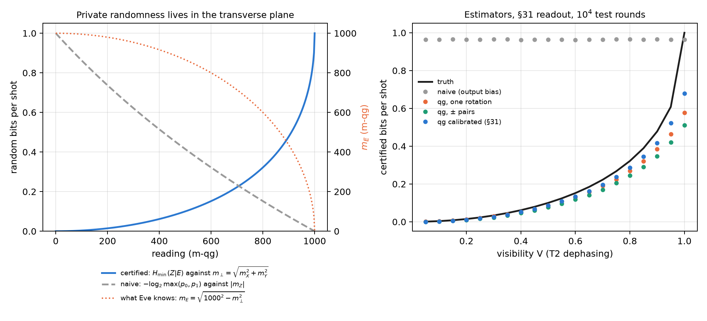
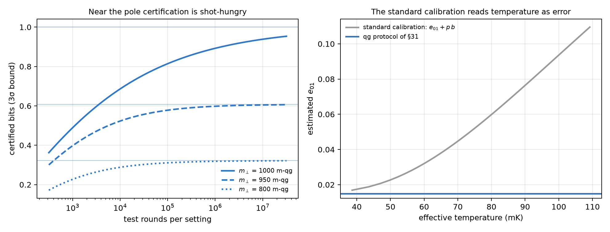
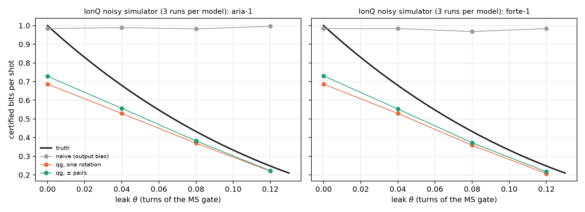

18 Certified quantum random numbers (QRNG) and channel auditing
A one-qubit quantum random number generator (QRNG) is the simplest experiment in the book: prepare \(|+\rangle\), measure in Z, write down the bit. The result is a fair coin, and that is what the usual analysis measures. But a fair coin is not the same as a private coin. If the qubit lost coherence, the output still comes out 50/50, and yet someone holding the environment can know every bit in advance. This chapter reads that difference on the scale of Chapter 1. The output lives in one reading and privacy in the other two, and what the adversary knows is one more reading: the one the state lacks to reach the sphere. The chapter adds the readout calibration needed to avoid overestimating, and the same certifier against a designed leak on IonQ’s simulator.
18.1 From the base: output and privacy are different readings
The source qubit has three readings, \(m_X\), \(m_Y\) and \(m_Z\). The QRNG output is the measurement in Z, and the usual analysis looks only at its bias: with \(p_0=(1000+m_Z)/2000\) it certifies
\[ H_{\text{naive}}=-\log_2\max(p_0,p_1)=-\log_2\frac{1000+|m_Z|}{2000} \]
bits per shot, 1 bit when \(m_Z=0\). But \(m_Z=0\) is given by \(|+\rangle\) and by the completely mixed state alike, and in the second case nothing is private: the environment holds the other half of the purification and knows what came out.
With a trusted measurement and an adversary (Eve) holding the purification, Eve’s two conditional states are pure, and their overlap depends only on the transverse radius \(r_\perp=\sqrt{qg_X^2+qg_Y^2}\). By Helstrom, her guessing probability is (notes, §41)
\[ P_{\text{guess}}=\frac{1+\sqrt{1-r_\perp^2}}{2},\qquad H_{\min}(Z|E)=-\log_2 P_{\text{guess}}. \]
On the scale of Chapter 1, that probability is one more reading. Its value in m-qg is
\[ m_E=1000\sqrt{1-r_\perp^2}=\sqrt{1000^2-m_X^2-m_Y^2}, \]
what the transverse radius lacks to reach the sphere, and its qang angle is \(\arcsin r_\perp\). The formula does not depend on \(m_Z\). A pure state on the equator has \(m_\perp=1000\) and leaves Eve at \(m_E=0\): she guesses with probability 1/2, and the bit is private. A state that lost coherence has \(m_\perp<1000\), and the length it lost is what Eve knows (Figure 18.1, left).
| \(m_\perp\) (m-qg) | 1000 | 990 | 950 | 900 | 800 | 500 | 200 |
|---|---|---|---|---|---|---|---|
| what Eve knows, \(m_E\) (m-qg) | 0 | 141 | 312 | 436 | 600 | 866 | 980 |
| private bits per shot | 1.000 | 0.810 | 0.608 | 0.478 | 0.322 | 0.100 | 0.015 |
The shape of the formula has a practical consequence. Ten m-qg less of transverse radius, from 1000 to 990, give Eve 141 m-qg and take 0.19 bits per shot from the source. It is the pole of Chapter 1 seen from the other side: near \(m_\perp=1000\), the square root has infinite slope.
18.2 The output-bias analysis fails; the qg reading does not
The qg certifier estimates \(m_X\) and \(m_Y\) with test rounds (rotations that bring X and Y to the measurement basis) and uses a 3σ lower bound on \(r_\perp\). The notes (§41) compare four estimators with \(10^4\) test rounds per setting, 300 runs per scenario and the asymmetric readout of §31 (\(e_{01}=0.015\), \(e_{10}=0.04\)):
- naive: the bias of the output;
- qg, one rotation: \(m_X\) and \(m_Y\) measured with one rotation each;
- qg, ± pairs: each axis with both rotations, so that the readout offset cancels;
- qg calibrated: the ± pairs, divided by the readout scale factor \(b\) measured with the protocol of §31.
| scenario | \(m_\perp\) | truth | naive | qg, one rotation | qg, ± pairs | qg calibrated |
|---|---|---|---|---|---|---|
| ideal \(\lvert+\rangle\) | 1000 | 1.000 | 0.965 (0) | 0.578 (0) | 0.512 (0) | 0.681 (0) |
| T2: \(V=0.8\) | 800 | 0.322 | 0.964 (1.00) | 0.269 (0) | 0.245 (0) | 0.286 (0) |
| T2: \(V=0.5\) | 500 | 0.100 | 0.965 (1.00) | 0.087 (0) | 0.077 (0) | 0.087 (0) |
| T2: \(V=0.2\) | 200 | 0.015 | 0.965 (1.00) | 0.013 (0.07) | 0.009 (0) | 0.010 (0) |
| thermal \(p=0.05\), \(V=0.9\) | 810 | 0.334 | 0.965 (1.00) | 0.279 (0) | 0.254 (0) | 0.297 (0) |
| strongly asymmetric readout, \(e_{10}=0.10\), \(V=0.95\) | 950 | 0.608 | 0.876 (1.00) | 0.498 (0) | 0.341 (0) | 0.513 (0) |
- The usual estimator is unsafe whenever the state is not pure. At \(V=0.2\) it certifies 0.97 bits per shot where only 0.015 are private, in 100% of runs. Dephasing and thermal mixing leave the output unbiased.
- The qg estimator with ± pairs is safe in every run, because the readout offset \(a\) cancels. With one rotation, the offset inflates \(r_\perp\) and overestimates in 7% of runs at \(V=0.2\). So the “100% against 0%” safety holds for the paired estimator, not for any qg reading whatsoever.
- Calibrating \(b\) with §31 recovers 10 to 50% more certified bits (0.286 against 0.245 at \(V=0.8\); 0.513 against 0.341 with the strongly asymmetric readout), without losing safety.

18.3 Near the pole certification is shot-hungry
A 3σ bound with \(n\) rounds per setting lowers the radius by \(3000/\sqrt n\) m-qg, and near the pole that is expensive. For a perfect source, without readout error:
| test rounds | \(10^3\) | \(10^4\) | \(10^5\) | \(10^6\) | \(10^7\) |
|---|---|---|---|---|---|
| bound on \(m_\perp\) (m-qg) | 905 | 970 | 991 | 997 | 999 |
| what is conceded to Eve, \(m_E\) (m-qg) | 425 | 243 | 137 | 77 | 44 |
| certified bits (truth: 1) | 0.489 | 0.686 | 0.814 | 0.892 | 0.939 |
| with \(m_\perp=950\) (truth: 0.608) | 0.397 | 0.523 | 0.578 | 0.598 | 0.605 |
With the §31 readout and the calibrated certifier, the simulation gives 0.68, 0.81 and 0.89 bits with \(10^4\), \(10^5\) and \(10^6\) rounds, the same. Away from the pole the bound converges fast: with \(m_\perp=950\), \(10^5\) rounds already give 95% of the truth (Figure 18.2, left). A nearly perfect source is the most expensive to certify.
18.4 Readout calibration: temperature or detector error
The calibrated certifier divides by the readout scale factor \(b\), and the question is where \(b\) comes from. On the scale of Chapter 1 the readout is affine (notes, §31):
\[ m_{\text{measured}}=1000\,a+b\,m,\qquad a=e_{10}-e_{01},\quad b=1-e_{01}-e_{10}. \]
A real qubit starts with thermal population \(p\), that is with \(m_{\text{eq}}=1000(1-2p)=1000\tanh(hf/2k_BT_{\text{eff}})\). The standard calibration measures “\(|0\rangle\)” and “\(|1\rangle\)”, which are really the thermal state and X on it: two readings for three unknowns (\(a\), \(b\), \(m_{\text{eq}}\)). It assumes \(m_{\text{eq}}=1000\) and charges the thermal population to the readout: it reports \(e_{01}+p\,b\) and \(e_{10}+p\,b\), exactly.
| \(p\) | \(T_{\text{eff}}\) (5 GHz) | \(m_{\text{eq}}\) (m-qg) | standard \(e_{01}\) | qg protocol \(e_{01}\) (§31) |
|---|---|---|---|---|
| 0 | 0 mK | 1000 | 0.0150 | 0.0149 |
| 0.01 | 52 mK | 980 | 0.0245 | 0.0151 |
| 0.03 | 69 mK | 940 | 0.0434 | 0.0148 |
| 0.08 | 98 mK | 840 | 0.0906 | 0.0152 |
The qg protocol adds the third equation. It measures, reads again and uses the covariance of the two readings, \(V=b^2(1-qg_{\text{eq}}^2)\), which separates \(b\) from \(m_{\text{eq}}\) in closed form. According to the notes, it recovers the temperature to ±1 mK from 52 mK up. Chapter 27 develops it. What matters here is its consequence for the QRNG: calibrating with the standard suite makes the certifier unsafe. With a thermal source (\(V=0.9\)), dividing by the standard \(b\), which is \(b(1-2p)\), returns \(r_\perp\) without the thermal contraction and certifies too much.
| \(p\) | truth | calibrated with the standard \(b\) | calibrated with the true \(b\) |
|---|---|---|---|
| 0.01 | 0.443 | 0.418 (0.01 unsafe) | 0.390 (0) |
| 0.03 | 0.383 | 0.414 (1.00 unsafe) | 0.339 (0) |
| 0.05 | 0.334 | 0.413 (1.00 unsafe) | 0.297 (0) |

18.5 On IonQ’s noisy simulator, with a leak
In the notes (§42) the leak is real: an ion \(q\) is the source and a second ion \(e\) plays the environment. An MS\((0,0,\theta)\) interaction lets \(e\) learn the X value of \(q\), and the output is read in X. It is still a fair coin, but the private randomness falls to the formula above with \(r=|\cos2\pi\theta|\) (X and Z exchanged). Test rounds measure ±Z and ±Y, and two circuits calibrate the readout. Everything is in native gates (GPI, GPI2, MS), with 5 pairs per circuit, \(10^4\) samples per setting and three repetitions per noise model, on the free simulator. Nothing was sent to a QPU.
| \(\theta\) (turns) | truth | naive | qg, one rotation | qg, ± pairs | measured / ideal \(m_\perp\) |
|---|---|---|---|---|---|
| 0 (no leak) | 1.000 | 0.98 | 0.69 | 0.73 | 1000 / 1000 |
| 0.04 | 0.680 | 0.99 / 0.98 | 0.53 | 0.56 / 0.55 | 954 / 969 |
| 0.08 | 0.433 | 0.98 / 0.97 | 0.37 / 0.36 | 0.38 / 0.37 | 866 / 876 |
| 0.12 | 0.248 | 1.00 / 0.98 | 0.22 / 0.21 | 0.22 | 721 / 729 |
- The naive estimator does not see the leak: 0.97–1.00 bits per shot in every run, above the truth in 100% of runs with \(\theta>0\). At \(\theta=0.12\) it certifies four times the private randomness.
- The qg estimator is safe in all 24 cells (run × \(\theta\)) and captures 81–90% of the truth when there is a leak, and 73% without one, because of the pole of the previous section.
- Calibration adds nothing here. The simulator’s readout is almost perfect (\(b=0.9998\)–\(1.0000\), \(|a|\le2\cdot10^{-4}\)). The 10–50% gain needs hardware-like readout errors, and this is a limit of the noise model that only a QPU can check.
- Gate noise is counted as lost privacy: the measured \(m_\perp\) sits 1–2% below the ideal, which is the MS error. That is as it should be, because the certifier cannot know who took that length.

18.6 What remains open
There is no hardware run. The missing test is a QRNG on a device with real readout errors, where the §31 calibration should show its 10–50% gain. It is a device-dependent QRNG (trusted measurement, independent and identical rounds), not device-independent randomness. And the leak of §42 is a designed interaction, not an adversary’s best strategy.
18.7 Without qang and with qang
| action | without qang | with qang | difference |
|---|---|---|---|
| certify bits from the output bias | \(-\log_2\max(p_0,p_1)\) | the same in \(m_Z\) | none: both fail alike, 100% unsafe under dephasing |
| certify private bits | Helstrom’s \(H_{\min}(Z\mid E)\) with the purification | \(m_E=\sqrt{1000^2-m_\perp^2}\): what Eve knows is the missing length | equivalent in the computation (the formula is standard); in favour in the reading: privacy is in the transverse plane and is measured with two rotations |
| how many test rounds are needed | error propagation on \(H_{\min}\) | the pole of Chapter 1: 10 m-qg of radius give Eve 141 m-qg | in favour, modest: it shows at a glance why the perfect source is the most expensive |
| calibrate the readout | two circuits; temperature is read as error | affine readout and a third equation (§31) | in favour: it avoids an unsafe certifier (100% of runs with \(p\ge0.03\)) and recovers 10–50% of bits |
| detect a leak (simulated IonQ) | the bias does not see it | safe in 24 of 24 cells, 81–90% of the truth | in favour of the transverse estimator, which is standard in device-dependent QRNGs |
Balance. The entropy bound is the usual one, and a QRNG expert already measures transverse coherence. What the Chapter 1 base adds is the reading: what the adversary knows is a reading in m-qg, \(m_E\), the length the state lacks to reach the sphere. Two things follow that can be seen at a glance: the drop of certification near the pole and the danger of calibrating the readout with two circuits. The second is the chapter’s most concrete gain, and it is owed to the §31 protocol, not to the unit.
18.8 In code
import math
import sys
sys.path.insert(0, "examples")
import qrng_qg_certified as Q
m_x, m_y = 800.0, 0.0 # transverse readings (m-qg)
m_perp = math.hypot(m_x, m_y)
m_e = math.sqrt(1000**2 - m_perp**2) # 600: what Eve knows
-math.log2((1000 + m_e) / 2000) # 0.322 private bits per shot
Q.h_min_certified(m_perp / 1000) # 0.322, the same computation18.9 Summary
- The output of a one-qubit QRNG is the reading \(m_Z\); its privacy is the transverse radius \(m_\perp\). What an adversary holding the purification knows is one more reading, \(m_E=\sqrt{1000^2-m_\perp^2}\).
- The output-bias analysis certifies almost 1 bit per shot even when the state is almost mixed: unsafe in 100% of runs with dephasing or thermal mixing. The qg estimator with ± pairs is safe in all of them.
- Near the pole certification is expensive: 10 m-qg of radius are worth 0.19 bits, and a perfect source gives 0.69 certified bits with \(10^4\) rounds and 0.89 with \(10^6\).
- The standard calibration reads temperature as readout error, and using it makes the certifier unsafe. The §31 protocol separates them and recovers 10–50% of bits.
- On IonQ’s simulator, with a designed leak, the naive estimator does not see it and the qg one is safe in every cell.
Bibliographic notes
Optimal state discrimination is Helstrom (1976), and the operational meaning of the min-entropy, Konig et al. (2009). For quantum random number generators, see the reviews Herrero-Collantes and Garcia-Escartin (2017) and Ma et al. (2016). The numbered research notes (§) cited in this chapter and the scripts that check it are in the repository (Monteverde 2026a); the definition of the qang unit is in Monteverde (2026b).